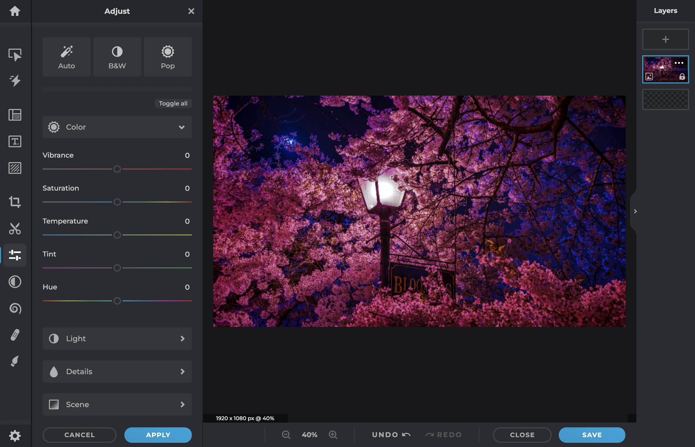
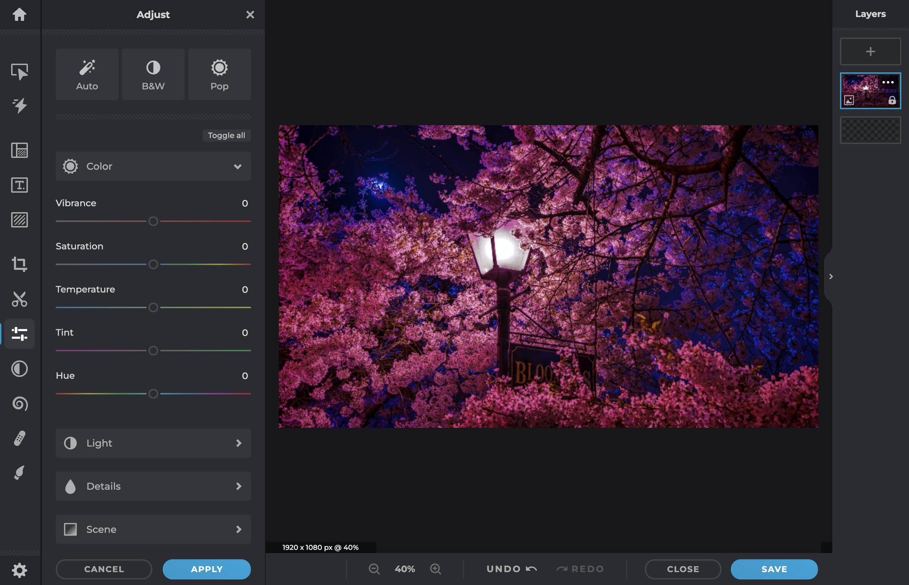

Step by Step Tutorial
Step 1: Choose Your Editing Software
Before editing your photo, you'll need photo editing software. Many options are available, from simple online editors to advanced desktop applications. For this tutorial, we'll use "Pixlr Editor," a popular and user-friendly online editor. Access it for free at www.pixlr.com/editor.

Step 2: Upload Your Photo
After accessing Pixlr Editor, click "Open Image" to upload the photo you want to edit. Choose from your computer or import it from your preferred cloud storage.

Step 3: Make yourself familiar with the interface
Pixlr Editor offers a user-friendly interface with a wide range of tools and options. Take some time to explore the menus and icons, familiarizing yourself with the layout for comfortable navigation during the editing process.
Step 4: Crop and Rotate
For specific area focus or orientation correction, use the "Crop" tool to select the desired portion of your photo. If needed, utilize the "Rotate" option to straighten any crooked images.
Step 5: Filters and Effects
Enhance your photo creatively with the "Filter" menu. Explore a variety of artistic filters and effects to choose from. Apply and witness the captivating transformation of your image.
 

Step 6: Add Text and Overlays
Need to add a caption or graphics to your photo? Use the "Text" tool to insert text and explore various overlays to further enhance your image.
Step 7: Save and Share Your Edited Photo
After completing your edits, go to the bottom right and click "Save." Choose your preferred format (JPEG or PNG) and save the photo to your computer. Now, proudly share your beautifully edited image with friends and on social media!